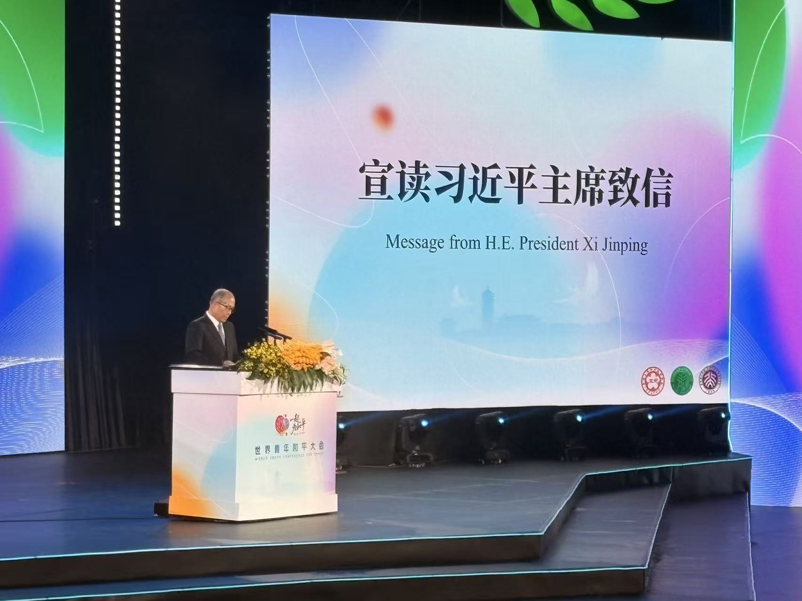
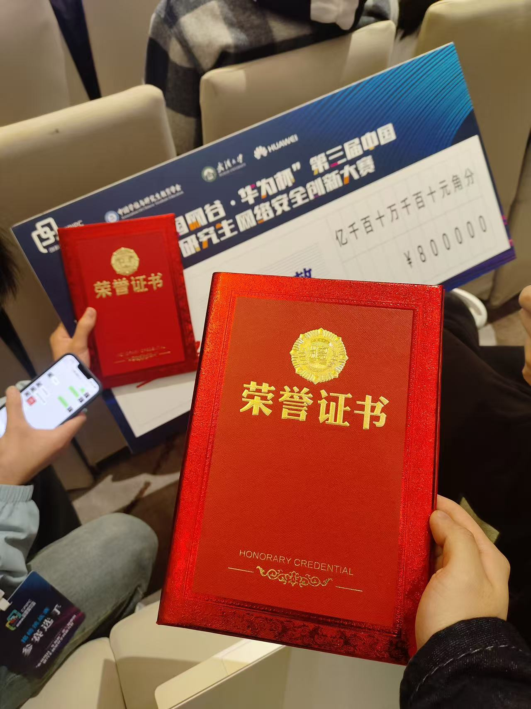

29 July 2025 World Youth Conference for Peace Khoo Teck Puat Gymnasium, Peking University · Beijing, China  A conference session at Peking University. Event report
16–17 November 2024 3rd China Postgraduate Cybersecurity Innovation Competition Dongxihu District, Wuhan, Hubei, China  An award from the competition. Event report